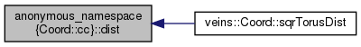

anonymous_namespace{Coord.cc} Namespace Reference
Functions | |
| static double | dist (double coord1, double coord2, double size) |
| On a torus the end and the begin of the axes are connected so you get a circle. More... | |
Function Documentation
◆ dist()
|
static |
On a torus the end and the begin of the axes are connected so you get a circle.
On a circle the distance between two points can't be greater than half of the circumference. If the normal distance between two points on one axis is bigger than half of the size there must be a "shorter way" over the border on this axis
References veins::FWMath::modulo().
Referenced by veins::Coord::sqrTorusDist().
static double dist(double coord1, double coord2, double size)
On a torus the end and the begin of the axes are connected so you get a circle.
Definition: Coord.cc:40
Here is the call graph for this function:

Here is the caller graph for this function:
